千葉県にある麻雀博物館、年に２回、博物館会報を発行している。博物館の会報だけあって、毎号、興味深い記事が載っている。会報という特殊な刊行物なので、一般の目に触れる機会が少ない。これまでも内容の一部を単発的に紹介したことがあったが、このカテゴリーで本格的に紹介することにした。
７号の１面は、今年10月31日、大阪の中之島公会堂で行われる中国麻将大会のPR記事。
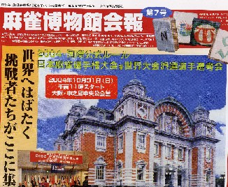
この中国麻将大会は昨年に続いて２回目。ところがこれを「国際公式ルール」と称しているので、昨年の第１回大会では中国麻将をまったく知らない人も、普通の麻雀大会だと思ってエントリーしてきた人がいたという。そんな混乱を避けるため、今年は各地にある中国麻将教室の推薦が必要とか。
２面は、博物館のある千葉県岬町でのふれあい麻雀大会の模様。
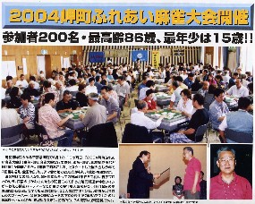
３面上段は麻雀博物館顧問の江橋崇先生の麻雀歴史に関する解説。
※ココで紹介した、P Art Cuiture magazine に掲載された論考の邦訳。
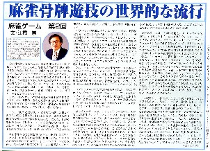
３面下段は、牌彫刻発祥の地である東京町田の牌彫刻師・山岸陸太郎氏の紹介記事。
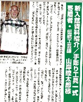
山岸氏手作りの彫刻刀やら、手作り牌ができるまでのパネルが非常に興味深い。
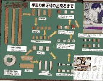 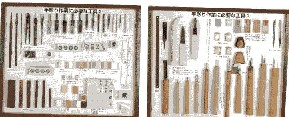
４面は、博物館所蔵のうちでも貴重な牌の紹介。さすがに麻雀博物館、じつに素晴らしい。
紙牌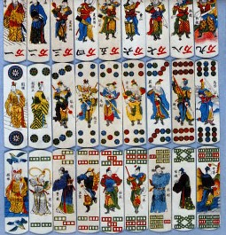
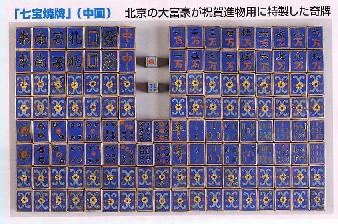
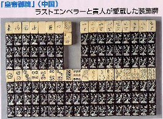
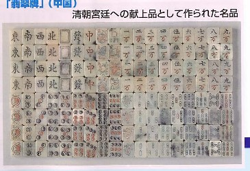
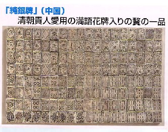
麻雀のルーツの一つと言われる昇官牌。福健牌の特徴である品子（通常の麻雀牌の万子に相当）や、花牌の春夏秋冬を想わせる春宮〜冬宮。そして三元牌のルーツか、白牌の存在が目を惹く。
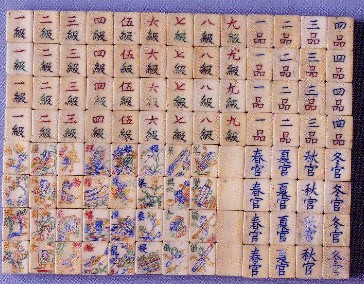
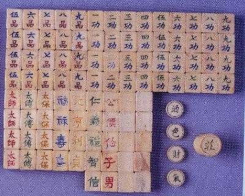
５面は各種雀卓。大阪の中麻大会にも出品されるという。もとより見事なモノであるが、雀卓というより多用卓かも....
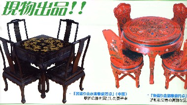
６面は、日本麻雀連盟の故・川崎備寛名人のメモリアル。
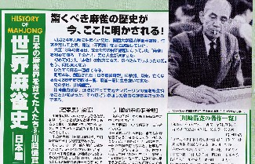
事績の紹介とともに著書一覧が掲載されている。
・麻雀通（四六書院 昭５刊 70銭）
・麻雀早和り法とガメクリ法（誠文堂十銭文庫昭６刊）
・麻雀高等新戦術（誠文堂十銭文庫 昭６刊）
・麻雀新戦術（誠文堂文庫 昭７刊 25銭）
・麻雀の打ち方（大泉書店 昭24刊 160円）
・麻雀千夜一夜（明玄書房 昭28刊 200円）
・麻雀入門（川津書店 昭29刊150円）
・麻雀の勝ち方（大泉書店 昭31刊 160円）
・最新麻雀入門（川津書店 昭32刊150円）
・麻雀必勝法（虹有社 昭41刊 手塚晴雄共著）
・麻雀日本創刊号（麻雀日本杜 昭7刊30銭）
６面の下段に、川崎名人の雀譜が掲載されている。ある対局で川崎名人が混一色をアガったものであるが、打ち筋は現代麻雀と対比すると面白い。そこで詳細は、他山石で取り上げてみたい。
７面は、第４回、野口恭一郎賞の麻雀大会の模様。
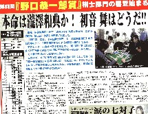
８面は、麻雀博物館だより。
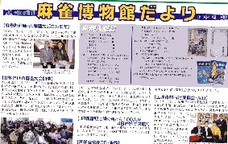
このページの右上に新規入館品が紹介されているが、いずれも素晴らしいものばかり。書籍では、「麻雀牌譜」、「宣和譜牙牌」が超貴重書籍。
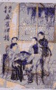 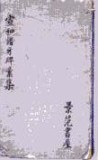
「昇官図」は、５面に掲載されている昇官牌の絵図版というか、元ゲーム。
また昭和４，５年代の麻雀誌、「麻雀春秋」、「麻雀時代」、「麻雀往来」、「麻雀戯誌」なども数点。これもまた貴重な資料。ココで紹介した「麻雀読本りべらる増刊」も入館したとある。
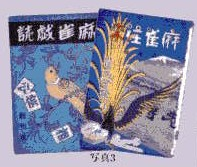
|